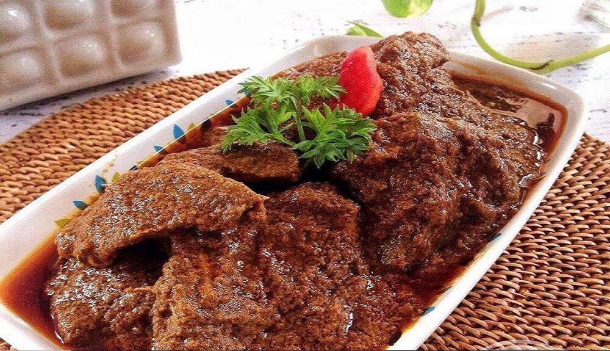
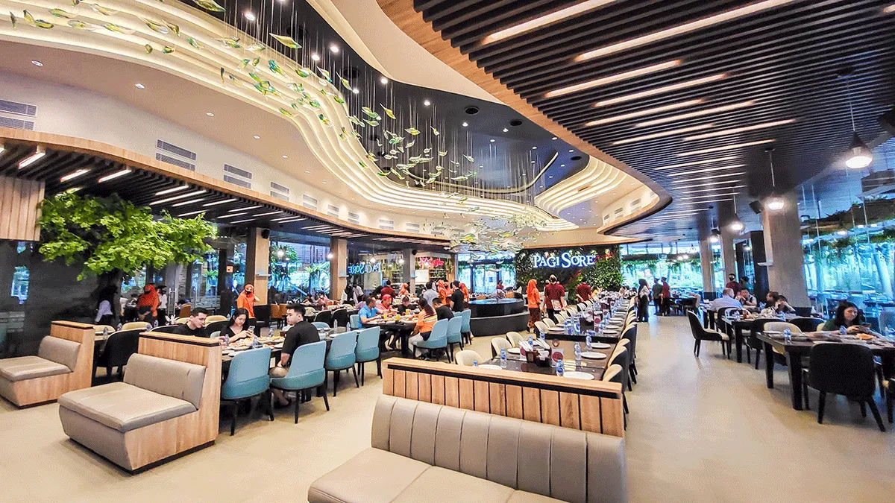
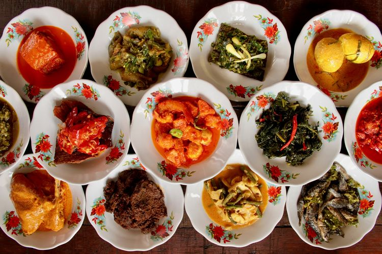

Nasi Padang adalah beberapa tempat kuliner Nasi Padang favorit dengan cita rasa otentik dan legendaris:

Gambar pertama menampilkan Rendang Mantap itu enak, pedas!

Gambar kedua menunjukkan suasana tempat makan yang luas, nyaman, ramai dikunjungi pelanggan.

Gambar ketiga memperlihatkan variasi nasi padang lengkap dengan rendang, ayam gulai, tahu, ikan nila bakar, dan sambal.